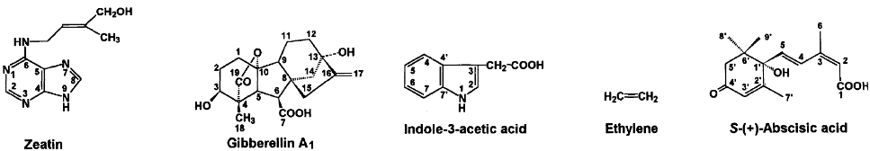
6 Phytohormones and Signal Transduction
Plant hormones are like tiny messengers inside plants. They come in many different forms but are usually very small molecules. Even though they’re tiny, they have big jobs and work at really low levels. These hormones often travel from one part of the plant to another to deliver their messages. They’re like the plant’s way of sending signals.
When these hormones reach their target, they make things happen. They can cause the plant to change how certain genes work. It’s kind of like flipping switches inside the plant to turn on or off different processes. These hormones do two main jobs:
Regulating Plant Life
They help control important parts of a plant’s life, like when fruits ripen, seeds sprout, and flowers bloom. They even play a role in how a plant grows.
Stress Responses
When a plant faces challenges like lack of water, getting old, or dealing with pests, these hormones kick into action to protect the plant. They help the plant survive tough times.
Plant hormone biology is really interesting to us humans for several reasons. One big reason is that the way plant hormones work, or sometimes don’t work, can have a big impact on agriculture. For example, there’s a hormone called ethylene that helps fruits ripen. Understanding how this hormone works can help us control when fruits ripen, which is essential for managing harvests.
We’ve also learned that we can use plant hormones to get the responses we want from plants. For instance, we can use hormones to make fruits ripen faster or delay the shedding of leaves. This kind of control is essential in agriculture.
In our efforts to breed plants for better qualities, we’ve noticed something interesting. Many of the plants we’ve bred for things like higher yields don’t produce or respond to hormones as effectively as wild plants. This is because what nature has selected for (survival in tough environments) isn’t always what we want (maximum production in controlled conditions). So, understanding how plant hormones work can help us create plants with the qualities we desire.
6.1 Auxin
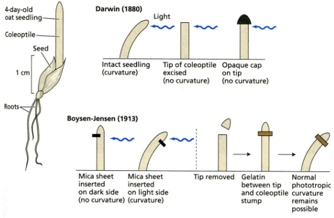
Darwin and his son made an interesting discovery about how plants respond to light. They found that the signal telling a plant to grow towards the light comes from the very tip of the shoot where it senses the light. But here’s the fascinating part – this signal doesn’t just stay at the tip. It travels down the shoot and affects what happens further down.
They also found that if you put something that water can’t pass through as a barrier, like a waterproof layer, it can stop this signal. But here’s an odd twist – if you use something like gelatin, which water can pass through, it doesn’t stop the signal.
6.1.1 Polar Transport
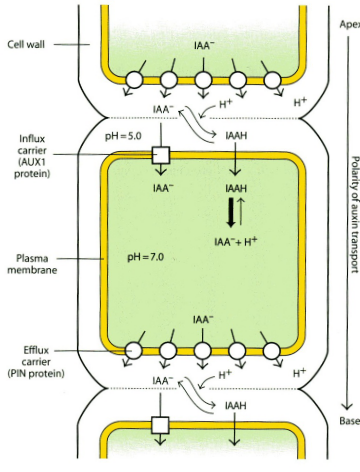
Auxin is a special hormone in plants, and it moves around in a pretty interesting way. It doesn’t just float around randomly; it’s transported through special cells in the xylem called parenchyma cells. This method is faster than just spreading by diffusion, which is how things usually move in and out of cells.
Now, here’s something unique about auxin: it always travels from the shoot (the upper part of the plant) to the root (the lower part), which is called basipetal transport. This one-way journey is possible thanks to specific proteins called PIN proteins. They act like precise carriers that ensure auxin goes in the right direction.
When auxin enters a cell, it does so as an uncharged molecule called IAAH. But then, it gets trapped when it loses a proton and becomes IAA-. These charged forms of auxin are carried by a protein called AUX1.
The only way auxin can leave the cell is through other PIN carriers, but they’re located only on the basal side (the bottom part) of the cell. This setup makes auxin move in a specific direction, which is called polar transport. It’s worth noting that auxin is the only hormone that travels in this polar way in plants.
6.1.2 What Does Auxin Do?
Auxin, also known as IAA-, is like the conductor of a plant’s orchestra because it influences so many things.
Firstly, it’s responsible for tropism, which is how plants move in response to their environment. For example, when a plant bends towards the light, it’s auxin that’s encouraging the cells to grow longer on one side, making the plant bend.
In terms of plant development, auxin plays a big role in something called apical dominance. This means it tells the plant not to grow branches from its main shoot until it’s ready. If you remove the main shoot, then the axillary buds can start growing. It also encourages more branching in the roots and helps fruits develop, especially when it’s produced in the seeds.
6.1.3 Ubiquitin-Proteasome System
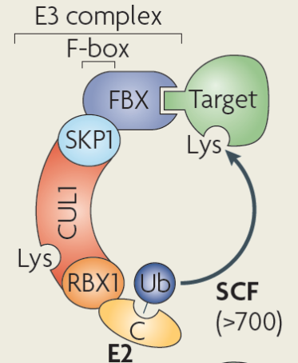
Inside plant cells, there’s a crucial system called the Ubiquitin-Proteasome system, and it plays a significant role in how several plant hormones work.
Now, here’s how it operates: In all cells, not just plant cells, there are proteins that need to be broken down when they’re no longer needed. This system marks these proteins for destruction by attaching a small molecule called ubiquitin to certain parts of the protein.
To identify which proteins need to be broken down, there’s a complex called E3 ubiquitin ligase. Think of it like a team leader. It uses something called an F-box protein to find the protein that needs to be broken down and position it properly for the ubiquitin molecule to attach.
Once the target protein is in the right position, an enzyme called E2 ubiquitin conjugating enzyme helps to add the ubiquitin molecule to the target protein. This marks it for destruction by the proteasome, which acts like a cell’s recycling center.
6.1.4 Mechanisms of Auxin
Auxin, a vital plant hormone, has various effects on plant growth, but it operates through an ancient and unified mechanism.
Normally, genes that respond to auxin are switched off. This happens because a repressor protein (AUX/IAA) teams up with auxin response factors (ARFs).
Auxin acts like a kind of glue. It brings together the repressor protein and another protein called TIR1, which is part of a larger complex called E3 ubiquitin ligase (SCF).
Once this complex forms, the repressor protein is marked for destruction by the ubiquitin proteasome system. When it’s broken down, the genes that respond to auxin can be turned on, and the plant can start doing what auxin is telling it to do.
Now, here’s an interesting twist: there are different versions or isoforms of TIR1, AUX/IAA, and ARF proteins. Depending on which isoforms are present, auxin can produce various effects in the plant. This means that the same hormone can have different outcomes based on the specific combination of proteins involved. To understand these complex interactions, scientists use systems biology approaches to reveal how plants respond to auxin in different ways.
6.2 Cytokinins
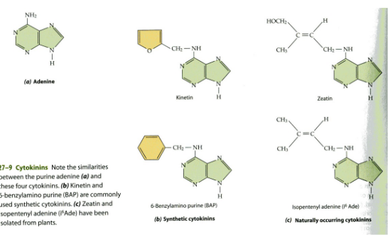
Cytokinins, which are important plant hormones, are made up of adenine and DMAPP (dimethyl allyl pyrophosphate), which is like a building block for them. The step that determines how fast they’re made is controlled by an enzyme called Isopentenyltransferase (IPT).
Now, where these cytokinins are made isn’t entirely clear, but we do know that some of them are produced in the roots and then travel up the plant through the xylem, which is like the plant’s plumbing system.
When it’s time for these hormones to stop working, another enzyme called cytokinin oxidase (CKX) comes into play. It deactivates the cytokinins. So, these hormones are kind of like messengers in the plant, and when their job is done, CKX turns them off.
6.2.1 Antagonism Between Cytokinins and Auxins
Cytokinins, which are important plant hormones, were actually discovered when scientists were working on tissue culture, a method for growing plants in a lab. They found a substance called kinetin, which is a product of DNA breakdown, could make plant cells grow into callus (a type of tissue).
Now, when it comes to plant growth, the balance between auxin and cytokinin matters a lot. If there’s a lot of auxin and not much cytokinin around, the plant tends to form roots. On the other hand, if there’s plenty of cytokinin but less auxin, the plant leans toward making shoots (the upper parts of the plant). So, it’s like a seesaw: more auxin tips the balance toward root formation, while more cytokinin tips it toward shoot formation.
6.2.1.1 What about in Plants?
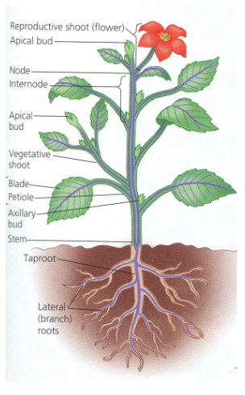
In plants, cytokinin and auxin have different effects in different parts of the plant.
In the shoot, cytokinin encourages cell division in the apical meristem, which is like the plant’s growth center at the tip. On the other hand, auxin stops the development of side shoots called axillary buds.
In the root, it’s a bit like they switch roles. Cytokinin puts the brakes on cell division, while auxin actually encourages it.
Here’s a bit of a technical explanation: The balance between these hormones depends on a protein called AUX/IAA, with one specific type called SHY2 being important. Cytokinin makes more of this protein, while auxin breaks it down. SHY2 then controls other processes by regulating the expression of certain proteins. It dampens the expression of PIN proteins, which affect how auxin is transported, and it boosts the production of IPT, which is needed for cytokinin production. So, these two hormones work in harmony but differently depending on the plant part and the levels of these proteins.
6.2.2 Decreasing Leaf Senescence
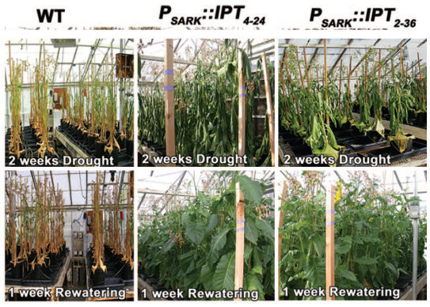
Scientists conducted an interesting experiment with tobacco plants. They engineered these plants to produce more of a hormone called cytokinin, which is crucial for plant growth, especially in stressful conditions like drought.
The exciting part is that these engineered tobacco plants became much more resilient to drought. One reason for this was that they didn’t go through leaf senescence - the aging and wilting of leaves - as quickly when they lacked water.
This experiment teaches us a valuable lesson: in some situations, the way plants naturally respond to stress, like by aging and wilting, might not be ideal for agriculture. But the good news is that we can use genetic engineering to change how plants respond to stress, making them better suited for farming. So, it’s a bit like giving plants a superpower to withstand tough conditions.
6.2.3 How do Cytokinins Work?

Cytokinin communicates with plant cells through a unique signaling pathway known as a phosphorelay two-component system.
Here’s how it works:
- Cytokinin attaches to a receptor on the outside of the cell.
- This binding activates a kind of “messenger” within the cell called a histidine kinase.
- The histidine kinase transfers a phosphate molecule (Pi) to a receiver domain within the cell and then to a soluble phosphotransfer protein.
- This phosphotransfer protein travels into the cell’s nucleus, the control center of the cell, where it triggers a series of additional phosphorylation events. These events lead to changes in gene expression, essentially instructing the cell on what to do.
It’s crucial to understand that cytokinin alters gene regulation, but it does so through a completely different mechanism compared to auxin, showing the incredible diversity of how hormones can influence plant growth and development.
6.3 Gibberelins
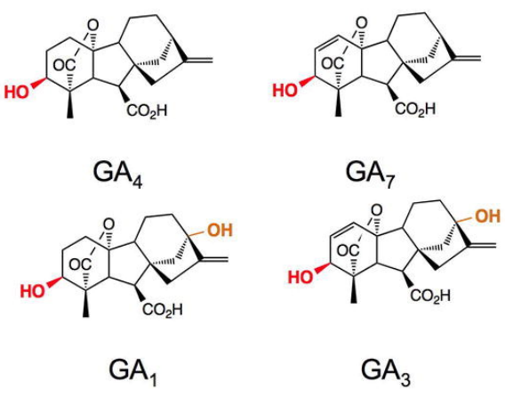
There’s a family of compounds found in plants, and although there are many of them (a whopping 136), not all are active.
These compounds are made through something called the terpenoid pathway, which is like a recipe for creating these molecules.
Now, what do they do? Well, they play important roles in promoting plant growth and encouraging seeds to sprout. So, you can think of them as the plant’s way of saying, “Let’s grow and get those seeds going!”
6.3.1 Gibberlein Causes Plant Growth
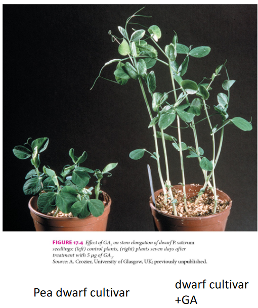
The story of gibberellic acid (GA) is pretty interesting. It was first discovered by Japanese scientists in the 1930s. They found that a fungus produced this compound, and when it got on rice plants, it made them grow super fast and tall. However, they grew so fast that they couldn’t support their own weight, and they fell over. This problem was humorously named foolish seedling disease.
But here’s the twist: it wasn’t until the 1950s that scientists realized GA is something that plants naturally produce inside themselves.
Now, here’s why GA is important: when plants have mutations in the genes responsible for making or responding to GA, they end up looking like dwarfs. Their stems are short and sturdy, which is actually a good thing in agriculture. These sturdy stems are better at holding up the big, heavy seeds produced by crop plants. So, GA helps plants grow, but it can also be controlled to create more manageable and productive crops.
6.3.2 How do Gibberelins Work?
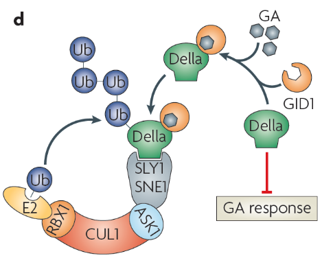
Gibberellic acid (GA) has a unique way of working inside plant cells:
There’s a special soluble receptor protein called GID1 that grabs onto GA when it’s around.
This GID1-GA duo then latches onto another protein called DELLA, which is like a stop sign for GA’s effects. DELLA is a negative regulator, meaning it slows down GA’s actions.
Now, the GID1-GA-DELLA trio comes across an F-Box protein in a group known as E3 ubiquitin ligase (SCF). This F-Box protein adds multiple ubiquitin tags to the DELLA protein. These tags act like a “dispose of” label, targeting the DELLA protein for degradation via the ubiquitin proteasome system, essentially breaking it down.
Once DELLA is out of the picture, genes that were previously repressed by DELLA are free to be expressed. It’s like removing a roadblock, allowing these genes to carry out their functions. So, GA indirectly controls gene expression by getting rid of DELLA proteins when it’s time for those genes to be active.
In both cases - for auxins and gibberelin, the F-box protein shown in the above image is different. It’s TIR1 in auxin as opposed to SLY1 and SNE1 here.
6.3.3 Green Revolution Plants
The “green revolution” in the 1960s was a game-changer for agriculture. It led to massive increases in crop yields, mainly because of two things: the use of semi-dwarf varieties of rice and wheat, and the application of more fertilizers.
Now, here’s where gibberellic acid (GA) comes into play. In recent years, scientists have discovered that GA plays a crucial role in this agricultural transformation.
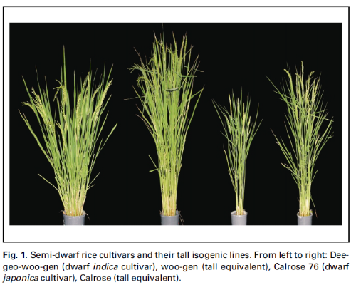
In rice, there’s a gene called sd1 (semi-dwarf 1). This gene encodes an enzyme that’s involved in the production of GA. When there’s less active GA around because of mutations in this gene, rice plants grow shorter, which is actually a good thing because they are less likely to fall over, and they can support more grains.
In wheat, there’s a gene called rht (reduced height). This gene encodes a DELLA protein, and this protein is typically broken down in the presence of GA, allowing plants to grow tall. But in some semi-dwarf wheat varieties, the DELLA protein can’t be degraded as it should. This messes up GA signaling and results in shorter wheat plants, which again is beneficial for agriculture because they are sturdier and can handle the weight of their grains better.
So, it turns out that GA and genes related to it have been key players in the success of the “green revolution” and the increased productivity of crops.
6.4 Brassinosteroids
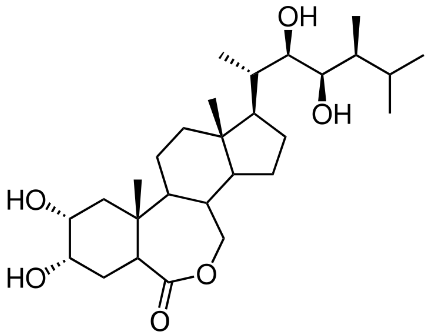
Brassinosteroids are like the plant version of steroids. They were actually discovered when scientists were looking for substances that promote growth in plants.
These steroids are made through a pathway called the terpenoid pathway, sort of like a recipe for their production.
They play a crucial role in plant development. When there are mutations in the genes responsible for making these steroids, plants end up looking dwarfed or smaller than usual. So, you can think of brassinosteroids as important hormones that help plants grow and develop properly.
6.4.1 How do Brassinosteroids Work?
Brassinosteroids, these plant steroid hormones, work through a pretty interesting process involving some key players.
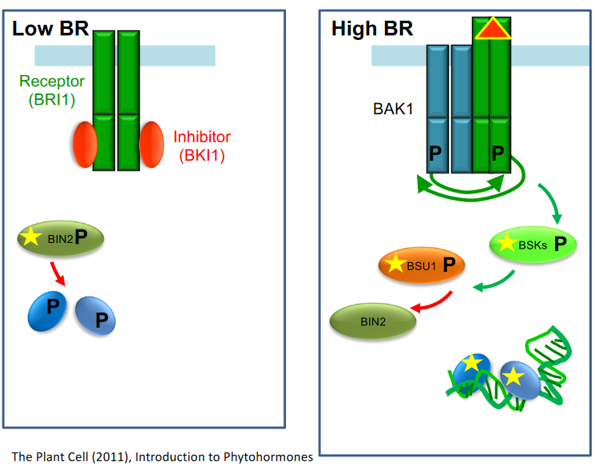
First, there’s a receptor called BRI1 that’s attached to the cell’s membrane. When there’s no signal telling the plant to grow, a kinase protein called BIN2 comes into play. This kinase does a little chemical handshake with some transcription factors, essentially making them inactive.
But when the plant receives the signal that it’s time to grow, like when brassinosteroids are present, a whole series of chemical reactions happen. This leads to the deactivation of BIN2. When BIN2 is inactive, it can’t mess with those transcription factors anymore, so they become active, which means they’re ready to get to work.
6.4.2 Signalling in Membranes and Endosomes
When brassinosteroids send their growth signal to a plant cell, a cool thing happens through a process called endocytosis.
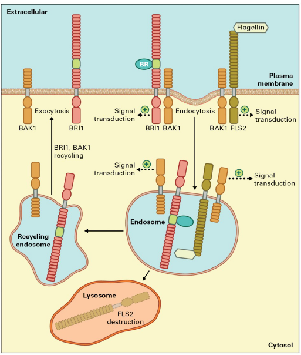
Endocytosis creates tiny structures called endosomes, and these little compartments contain the receptors BRI1 and BAK1. These endosomes then travel around inside the cell’s cytoplasm and continue to send signals.
This is pretty neat because it means that even parts of the cell membrane far away from the cell’s central command (the nucleus) can still get the message to grow.
And here’s the bonus: the receptors aren’t wasted. After they’ve done their job, they get recycled back to the cell membrane, ready to catch the next growth signal that comes their way. So, it’s like they’re good at their job and eco-friendly too!
6.5 Ethylenes
Ethylene is a gas that has a special role in making fruits ripe and ready to eat. It’s like the plant’s way of saying, “I’m ready to be delicious!”
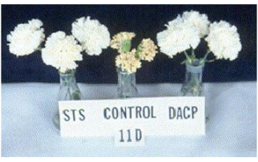
Ethylene also has another job. It promotes things like leaf shedding (called abscission) and the natural aging of flowers (flower senescence).
In farming and food storage, ethylene is used to speed up the ripening of fruits. Think of it like a fruit fast-forward button. But if you want to slow things down, you can store fruit in an environment with lots of carbon dioxide (CO2), which reduces ethylene production and slows down the ripening process.
And here’s a cool trick: scientists have found ways to delay flower aging by using substances like sodium thiosulphate and diazocyclopentadiene. These chemicals bind to the ethylene receptor, kind of like putting a lock on it, so it can’t do its job and make the flowers age as quickly. So, ethylene is like the conductor of the plant’s symphony of ripening and aging, and we can fine-tune its effects to our advantage in agriculture.
6.5.1 How does Ethylene Work?
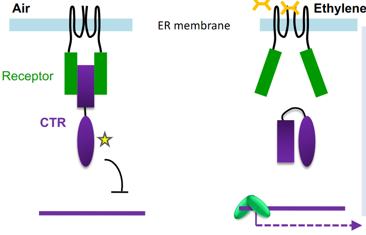
When there’s no ethylene around, a protein called CTR steps in. It binds to the ethylene receptor and starts a process where other molecules get tagged with little phosphate groups in a cascade of chemical reactions. This tagging, called phosphorylation, acts like a “do not disturb” sign for transcription, which is the process of making proteins based on the instructions in genes.
But when ethylene comes into the picture and binds to the receptor, it’s like a key that unlocks CTR from the receptor. This release of CTR allows transcription to happen. So, in simple terms, ethylene acts as a switch that turns on the process of making proteins based on certain genes.
6.6 Abscisic Acid (i.e. ABA)
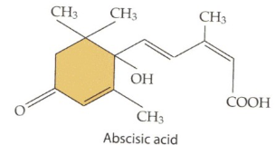
Abscisic acid (ABA) is like the sleepytime hormone for plants. It’s made through a process called the terpenoid pathway.
One of its main jobs is to tell seeds it’s time to take a nap, or in other words, establish seed dormancy. This dormancy helps seeds survive until they’re in the right conditions to grow.
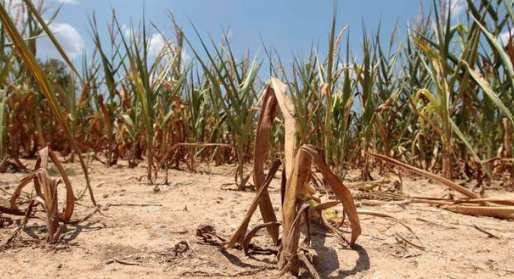
But ABA also has another important role. It works as a signal during stressful times in a plant’s life. When things like drought or extreme temperatures happen, ABA steps in and tells the plant to slow down its growth and conserve water.
6.6.1 Seed Dormancy by ABA and GA
In some maize mutants lacking ABA (abscisic acid), something interesting happens – they become viviparous, which means their seeds start to sprout even before they leave the parent plant.
ABA usually acts like a “do not disturb” sign for seeds, preventing them from germinating prematurely. But when ABA is missing, seeds can’t resist the urge to sprout.
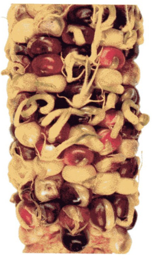
To break seed dormancy and allow germination to happen, a hormone called gibberellic acid (GA) steps in. But here’s the catch: GA and ABA are like rivals. They work against each other. The balance between these two hormones controls whether a seed stays dormant or starts to grow.
In fact, GA is so good at making seeds sprout that it’s used by the brewing industry to help barley seeds germinate for beer production. So, you can think of ABA and GA as the plant’s internal seesaw, deciding when it’s time for seeds to wake up and grow.
6.6.2 ABA Production Under Stress
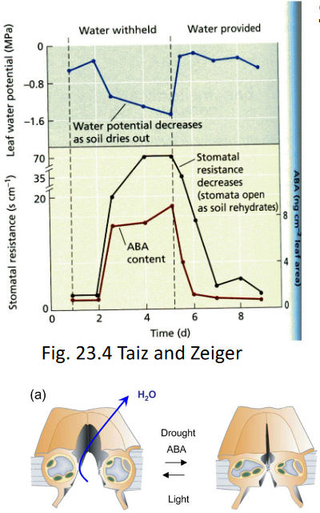
When a plant faces a drought, it goes into high gear to produce more ABA (abscisic acid). ABA is like the plant’s superhero in times of drought.
When ABA levels are high, it sends a signal to the stomata, which are tiny openings in the leaves. These stomata are responsible for breathing, but they also let out water through a process called transpiration. High ABA levels act like a traffic cop, telling the stomata to close up shop and reduce water loss. It’s the plant’s way of saying, “We need to conserve water right now!”
Interestingly, ABA isn’t just made in the leaves; the roots can produce it too. And when the roots make ABA, it can travel up to the leaves through the xylem, like a plant’s internal communication system.
Now, here’s something cool: there are some mutants, often called wilty, that can’t make ABA. These plants can only thrive in humid conditions because they can’t effectively conserve water during droughts.
Scientists have been trying to figure out how ABA does its superhero job, and they’ve proposed a bunch of candidates for the ABA receptor – like who ABA talks to in the plant cells. But it’s a bit of a mystery, and there’s still some debate among scientists about the exact details.
6.7 Jasmonic Acid
When a plant gets nibbled on by hungry insects that chew on its leaves, it doesn’t just sit there and take it. It fights back! This defense mechanism is called “induced defense.”
One of the superheroes behind this defense is a hormone called Jasmonic acid, or JA for short. Within just 30 minutes of a plant getting nibbled, the levels of JA shoot up like a rocket.
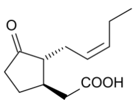
JA is like the general of the plant’s army. It signals the plant to activate a bunch of genes that are all about defense. These genes kickstart processes like making special chemicals (secondary metabolism) and producing proteins that mess with the digestion of the herbivores (think of them as plant bodyguards, like bouncers at a club). These proteins are called protease inhibitors.
6.7.1 How is Jasmonic Acid Made?
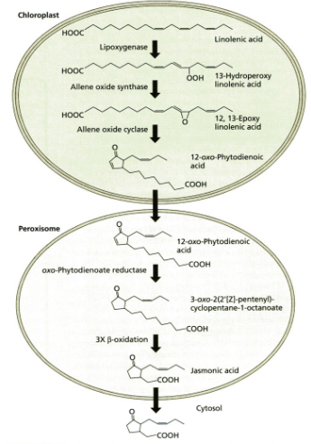
Making Jasmonic acid (JA) in plants is a bit like a treasure hunt spread across different parts of the plant.
It all starts with linolenic acid, which is a type of fat found in the plant’s cell membranes. This linolenic acid is like a hidden treasure waiting to be discovered.
But to turn this treasure into active JA, there’s a crucial step. JA needs to team up with an amino acid called isoleucine. This partnership is what makes JA bioactive, like unlocking its superpowers.
But here’s the cool part: JA doesn’t just stay in one spot. It moves throughout the plant using a special plant highway called the phloem. It travels to different parts of the plant and tells them, “Hey, we’re under attack, gear up for defense!” So, it’s not just a local response; it’s a whole-plant response to keep those leaf-chomping insects at bay.
6.7.2 JA Signalling
The way Jasmonic acid (JA) signals in plants is like a secret handshake club. It’s surprisingly similar to how another hormone called auxin signals.
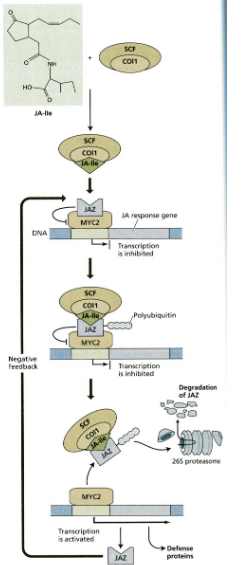
Here’s how it works: JA gets a makeover and becomes JA-Ile, which is like a secret code. JA-Ile acts like a special glue, helping a JAZ repressor protein attach to an F-box protein called COI1, which is part of a complex known as the E3 ubiquitin ligase.
Once the JAZ repressor is stuck to COI1, it’s tagged with a label called ubiquitin, like a “kick me” sign. Then, it’s sent to the proteasome, which is like the plant’s recycling center. There, the JAZ repressor gets broken down into its building blocks.
With the JAZ repressor out of the way, the plant can finally turn on the genes it needs for defense or other important tasks. It’s like opening the gates for action in the plant’s superhero squad.
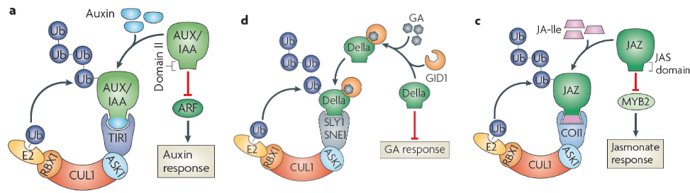
No matter which hormone we’re talking about, when it binds to its special receptor, it sets off a chain reaction. This reaction sends a repressor (a bit like a traffic cop) to a special E3 ubiquitin ligase complex known as SCF. This complex is like a control center.
Once the repressor gets to SCF, it’s like a green light for destruction. SCF tags the repressor with a label called ubiquitin, and off it goes to the plant’s recycling center, the proteasome. There, the repressor gets broken down into its basic parts.
Now, what makes these hormones so amazing is that, even though they use this similar method to silence the repressor, they each have their own unique jobs and effects in the plant. So, whether it’s about growth, defense, or some other important task, each hormone has its own special mission.